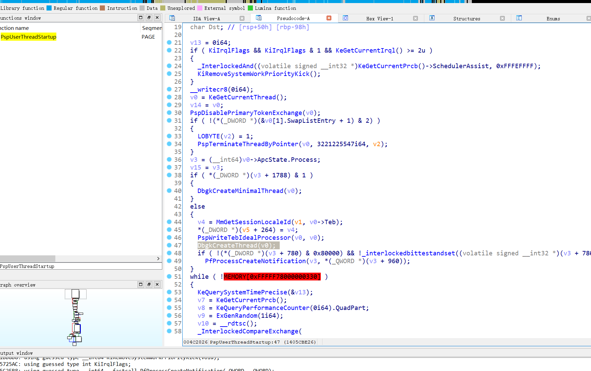

调试器学习与编写
老早前写的东西。。。突然意识到忘记发了，成品代码不见了只有半成品
参考<<软件调试>>&&网上各大神的资料
在学习调试之前首先得明白调试得原理
分析函数
DebugActiveProcess
跟如__imp_DbgUiConnectToDbg
1 | |
可以看到进内核创建调试对象然后放到了teb+0x16A8处
反调试方法加1
继续看
跟进0环
查看如何建立联系
主要是判断debugport是否为0，然后吧对象写入
所以调试大致流程是，调试器进程创建调试对象句柄放入自身teb+16A8h
然后吧调试对象地址放入被调试进程eprocess的debugport处
总结
图上不是win10得，数值上有些区别但是大致原理一样
调试事件的处理
主要是通过捕获调试消息，调试消息程序会发送给调试器DbgkpSendApiMessage
调试事件采集函数：
<1> 创建进程、线程必经之路:
PspUserThreadStartup
DbgkCreateThread
DbgkpSendApiMessage(x, x)
<2> 退出线程、进程必经之路：
PspExitThread
DbgkExitThread/DbgkExitProcess
DbgkpSendApiMessage(x, x)
<3> 加载模块的必经之路：
NtMapViewOfSection
DbgkMapViewOfSection
DbgkpSendApiMessage(x, x)
<4> 卸载模块的必经之路：
NtUnMapViewOfSection
DbgkUnMapViewOfSection
DbgkpSendApiMessage(x, x)
<5> 异常的必经之路：
KiDispatchException
DbgkForwardException
DbgkpSendApiMessage(x, x)
可以亲自验证下，以PspUserThreadStartup为例

至于调试事件
1 | |
dwDebugEventCode描述了调试事件的类型，总共有9类调试事件：
| CREATE_PROCESS_DEBUG_EVENT | 创建进程之后发送此类调试事件，这是调试器收到的第一个调试事件。 |
|---|---|
| CREATE_THREAD_DEBUG_EVENT | 创建一个线程之后发送此类调试事件。 |
| EXCEPTION_DEBUG_EVENT | 发生异常时发送此类调试事件。 |
| EXIT_PROCESS_DEBUG_EVENT | 进程结束后发送此类调试事件。 |
| EXIT_THREAD_DEBUG_EVENT | 一个线程结束后发送此类调试事件。 |
| LOAD_DLL_DEBUG_EVENT | 装载一个DLL模块之后发送此类调试事件。 |
| OUTPUT_DEBUG_STRING_EVENT | 被调试进程调用OutputDebugString之类的函数时发送此类调试事件。 |
| RIP_EVENT | 发生系统调试错误时发送此类调试事件。 |
| UNLOAD_DLL_DEBUG_EVENT | 卸载一个DLL模块之后发送此类调试事件。 |
下面是调试事件
1 | |
断点
软件断点
这个比较简单，软件断点就是把目标机器码替换为0xcc int 3
这样就会触发异常发送给调试器，调试器进行处理。
这时一般都会输出当时ip多少还有各个寄存器的值，其实是利用GetThreadContext来获得
1 | |
第一个参数是线程的句柄，第二个参数是指向CONTEXT结构的指针。要注意，调用该函数之前需要设置CONTEXT结构的ContextFlags字段，指明你想要获取哪部分寄存器的值。该字段的取值如下：
| CONTEXT_CONTROL | 获取EBP，EIP，CS，EFLAGS，ESP和SS寄存器的值。 |
|---|---|
| CONTEXT_INTEGER | 获取EAX，EBX，ECX，EDX，ESI和EDI寄存器的值。 |
| CONTEXT_SEGMENTS | 获取DS，ES，FS和GS寄存器的值。 |
| CONTEXT_FLOATING_POINT | 获取有关浮点数寄存器的值。 |
| CONTEXT_DEBUG_REGISTERS | 获取DR0，DR1，DR2，DR3，DR6，DR7寄存器的值。 |
| CONTEXT_FULL | 等于CONTEXT_CONTROL | CONTEXT_INTEGER | CONTEXT_SEGMENTS |
当然在编写程序时还需要注意，断点断下后要让ip–
内存断点
内存断点和软件断点有些区别
但本质一样，都是通过触发异常然后发送给调试器来处理
主要是通过修改页属性，当访问该页时则会出现缺页异常然后发送调试事件，调试器接收到后进行处理
与软件断点不同的是，内存断点不需要ip–
硬件断点
先看下调试寄存器
设置硬件断点：
1、Dr0~3用于设置硬件断点，由于只有4个断点寄存器，所以最多
只能设置4个硬件调试断点。
2、Dr7是最重要的寄存器：
<1> L0/G0 ~ L3/G3：控制Dr0~Dr3是否有效，局部还是全局。
每次异常后，Lx都被清零,Gx不清零。
<2> 断点长度(LENx)：00(1字节) 01(2字节) 11(4字节)
<3> 断点类型(R/Wx)：00(执行断点) 01(写入断点) 11(访问断点)
处理硬件断点：
1、硬件调试断点产生的异常是 STATUS_SINGLE_STEP（单步异常）
2、B0~B3：哪个寄存器触发的异常
所以我们可以总结下
首先硬件断点有个数量限制那就是4个，还有就是与内存断点和软件断点不同的是，硬件断点是通过单步异常来触发
单步异常
之前硬件断点学习后对单步异常有个初步了解
首先单步异常的出现是因为有这个需求，调试的时候需要单步走查看变化，需要一直下断点触发异常，为了满足需求，现在只需要把TF置1
这样每走一步就会触发单步异常
单步步过
问题:当出现call时，单步入和单步过的实现
单步过通过软件断点或者硬件断点来实现，通过计算当前指令长度然后下断点后直接跑
调试器一般都这么实现所以有时候没有跟进call，但是call的函数改变了返回值，导致程序跑飞